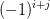
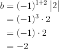
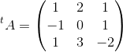

Inversa unei matrice
Definiția inversei unei matrice
Fie ,  o matrice pătratică de ordinul
o matrice pătratică de ordinul  și
și  matricea unitate de ordinul .
matricea unitate de ordinul .
Definiția M31: Matrice inversabilă și inversa unei matrice
Matricea  este matrice inversabilă dacă există o matrice astfel încât să aibă loc relația:
este matrice inversabilă dacă există o matrice astfel încât să aibă loc relația:
.
Matricea  introdusă în definiția de mai sus se numește inversa matricei și se notează .
introdusă în definiția de mai sus se numește inversa matricei și se notează .
.
Definiția M32: Matrice nesingulară
O matrice se numește nesingulară dacă are determinantul nenul . În caz contrar, adică dacă determinantul are valoarea  , matricea se va numi matrice singulară.
, matricea se va numi matrice singulară.
Teorema M33
O matrice este inversabilă dacă și numai dacă ea este o matrice nesingulară.
Altfel spus, matricea este inversabilă dacă și numai dacă .
Exemplu:
Se dă matricea . Să se verifice dacă matricea este inversa matricei .
Pentru a verifica dacă matricea este inversa matricei , verificăm relația: ( este matricea unitate de ordinul  ).
).
Calculăm .
![\begin{align*} A\cdot B&=\begin{pmatrix} 3 &0 &1 \\ 0& 2 & 0\\ 0 & 0 & 1 \end{pmatrix}\cdot \begin{pmatrix} \displaystyle\frac{1}{3} &0 &-\displaystyle\frac{1}{3} \\ 0&\displaystyle \frac{1}{2} & 0\\ 0 & 0 & 1 \end{pmatrix}\\\\ &=\begin{pmatrix} 3\cdot \displaystyle\frac{1}{3}+0\cdot 0+1\cdot 0 &3\cdot 0+0\cdot \displaystyle\frac{1}{2}+1\cdot 0 &3\cdot \Big(-\displaystyle\frac{1}{3}\Big)+0\cdot 0+1\cdot 1 \\\\ 0\cdot \displaystyle\frac{1}{3}+2\cdot 0+0\cdot 0 &0\cdot 0+2\cdot \displaystyle\frac{1}{2}+0\cdot 0 &0\cdot \Big(-\displaystyle\frac{1}{3}\Big)+2\cdot 0+0\cdot 1 \\\\ 0\cdot \displaystyle\frac{1}{3} +0\cdot 0+1\cdot 0 &0\cdot 0+0\cdot \displaystyle\frac{1}{2} +1\cdot 0 & 0\cdot \Big(-\displaystyle\frac{1}{3}\Big) +0\cdot 0+1\cdot 1 \end{pmatrix}\\\\ &=\begin{pmatrix} 1+0+0 &0+0+0 & -1+0+1\\ 0+0+0 & 0+1+0 &0+0+0 \\ 0+0+0 &0+0+0 & 0+0+0 \end{pmatrix}\\\\ &=\begin{pmatrix} 1 & 0 &0 \\ 0& 1 &0 \\ 0&0 &1 \end{pmatrix}\\\\ &=I_3 \end{align*}](../media/webbooks/283/1799/images/equations/xoybo0lqiavaqfpm_zq0ua==.gif)
Calculăm .
![\begin{align*} B\cdot A&=\begin{pmatrix} \displaystyle\frac{1}{3} &0 &-\displaystyle\frac{1}{3} \\ 0&\displaystyle \frac{1}{2} & 0\\ 0 & 0 & 1 \end{pmatrix}\cdot\begin{pmatrix} 3 &0 &1 \\ 0& 2 & 0\\ 0 & 0 & 1 \end{pmatrix}\\\\ &=\begin{pmatrix} \displaystyle\frac{1}{3}\cdot3+0\cdot 0+\Big(-\displaystyle\frac{1}{3}\Big)\cdot 0 &\displaystyle\frac{1}{3}\cdot 0+0\cdot 2+\Big(-\displaystyle\frac{1}{3}\Big) &\displaystyle\frac{1}{3}\cdot 1+0\cdot 0+\Big(-\displaystyle\frac{1}{3}\Big)\cdot 1 \\ 0\cdot 3+\displaystyle\frac{1}{2}\cdot 0+0\cdot 0 &0\cdot 0+\displaystyle\frac{1}{2}\cdot 2+0\cdot 0 &0\cdot 1+\displaystyle\frac{1}{2}\cdot 0+0\cdot 1 \\ 0\cdot 3+0\cdot 0+1\cdot 0& 0\cdot 0+0\cdot 2+1\cdot 0 &0\cdot 1+0\cdot 0+1\cdot 1 \end{pmatrix}\\\\ &=\begin{pmatrix} 1+0-0 &0+0+0 &\displaystyle\frac{1}{3} +0-\displaystyle\frac{1}{3}\\ 0+0+0 & 0+1+0 & 0+0+0\\ 0+0+0 & 0+0+0 &0+0+1 \end{pmatrix}\\\\ &=\begin{pmatrix} 1 & 0 &0 \\ 0& 1 &0 \\ 0&0 & 1 \end{pmatrix}\\\\ &=I_3 \end{align*}](../media/webbooks/283/1799/images/equations/us-rv7itqzjy1p9ipd5pxw==.gif)
Etapele de determinare a inversei unei matrice pătratice
Vom trata problema determinării inversei unei matrice pătratice de ordinul  și respectiv de ordinul .
și respectiv de ordinul .
a. Pentru  .
.
Fie matricea  .
.
1. Calculăm cu formula:
Dacă  , adică
, adică  , atunci matricea nu este inversabilă.
, atunci matricea nu este inversabilă.
Dacă , atunci matricea este inversabilă și se continuă procedeul de determinare a inversei acesteia.
2. Scriem transpusa matricei .
3. Construim matricea adjunctă a matricei , notată .
, unde
4. Determinăm inversa matricei , folosind următoarea formulă:
.
Observație:
Atunci când calculăm elementele matricei adjunctă , vom înmulții pe  (în funcție de poziția elementului pe care îl calculăm) cu determinantul de ordinul care rămâne după ce "tăiem" linia și coloana elementului curent din matricea transpusă .
Exemplu:
Fie matricea pătratică de ordinul doi .
Calculăm inversa matricei folosind procedeul descris anterior.
1. Calculăm .
Rezultă că matricea  este inversabilă.
este inversabilă.
2. Scriem transpusa matricei .

3. Construim matricea adjunctă .

4. Calculăm inversa matricei astfel:
Exercițiu: Verifică, utilizând relația , că matricea determinată mai sus este inversa matricei .
b. Pentru .
Fie matricea
1. Calculăm . Reamintim că:
Dacă (adică ), atunci matricea nu este inversabilă.
Dacă , atunci matricea este inversabilă și se continuă procedeul de determinare a inversei acesteia.
2. Scriem transpusa matricei .
3. Construim matricea adjunctă a matricei , notată .
, unde
4. Determinăm inversa matricei , folosind următoarea formulă:
.
Observație:
Atunci când calculăm elementele matricei adjunctă , vom înmulții pe (în funcție de poziția elementului pe care îl calculăm) cu determinantul de ordinul care rămâne după ce "tăiem" linia și coloana elementului curent din matricea transpusă .
Exemple:
1. Fie matricea pătratică de ordinul .
Calculăm inversa matricei folosind procedeul descris anterior.
Mai întâi, verificăm dacă matricea este inversabilă, calculându-i determinantul.
Cum , rezultă că matricea nu este inversabilă, deci nu ii putem afla inversa.
2. Fie matricea pătratică de ordinul .
Calculăm inversa matricei folosind procedeul descris mai sus.
Calculăm .
Rezultă că este inversabilă.
Scriem transpusa matricei .

- Construim matricea adjunctă .
, unde
Determinăm inversa matricei , folosind formula:
.
![\begin{align*} \Rightarrow A^{-1}&=\frac{1}{-8}\cdot\begin{pmatrix} -3 & -1 &-3 \\ 7& -3& -1\\ 2& -2 & 2 \end{pmatrix}\\\\ &=\begin{pmatrix} \Big(-\displaystyle\frac{1}{8}\Big)\cdot (-3) &\Big(-\displaystyle\frac{1}{8}\Big)\cdot (-1) &\Big(-\displaystyle\frac{1}{8}\Big)\cdot (-3) \\ \\ \Big(-\displaystyle\frac{1}{8}\Big)\cdot 7&\Big(-\displaystyle\frac{1}{8}\Big)\cdot (-3)&\Big(-\displaystyle\frac{1}{8}\Big)\cdot ( -1)\\ \\ \Big(-\displaystyle\frac{1}{8}\Big)\cdot 2&\Big(-\displaystyle\frac{1}{8}\Big)\cdot (-2) &\Big(-\displaystyle\frac{1}{8}\Big)\cdot 2 \end{pmatrix}\\\\ &=\begin{pmatrix} \displaystyle\frac{3}{8} & \displaystyle\frac{1}{8}&\displaystyle\frac{3}{8} \\ \\ -\displaystyle\frac{7}{8} & \displaystyle\frac{3}{8} &\displaystyle\frac{1}{8} \\ \\ -\displaystyle\frac{1}{4}& \displaystyle\frac{1}{4} & -\displaystyle\frac{1}{4} \end{pmatrix} \end{align*}](../media/webbooks/283/1799/images/equations/rjzo6jtdzngif5in3cer3g==.gif)
Exercițiu: Verifică, utilizând relația că matricea determinată mai sus este inversa matricei .